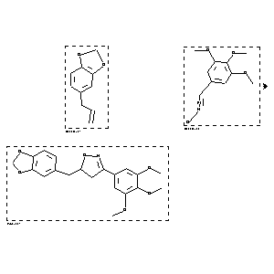

|  |
| FA | RX(1); FLST(1); RX(1) |
Reaction (1 of 1)
| Reaction ID | 1767846 |
| Reactant BRN | 136380; 2054576 |
| Reactant | 5-allyl-benzo[1,3]dioxole; 3,4,5-trimethoxy-benzaldehyde (E)-oxime |
| Product BRN | 5148060 |
| Product | 3-(3,4,5-Trimethoxy)phenyl-5-(3,4-methylenedioxy)benzyl-4,5-dihydroisoxazole |
| No. of Reaction Details | 1 |
Reaction Details (1 of 1)
| Reaction Classification | Preparation |
| Yield | 93 percent (BRN=5148060) |
| Reagent | chloramine-T |
| Solvent | ethanol |
| Time | 3 hour(s) |
| Other Conditions | Heating |
| Citation Pointer | 5642804; Journal; Hassner, Alfred; Rai, K. M. Lokanatha; SYNTBF; Synthesis; EN; 1; 1989; 57-59; |
Reference (1 of 1)
| Citation Number | 5642804 |
| Document Type | Journal |
| Authors | Hassner, Alfred; Rai, K. M. Lokanatha |
| CODEN | SYNTBF |
| Journal Title | Synthesis |
| Language Code | EN |
| Number | 1 |
| Publication Year | 1989 |
| Page | 57-59 |